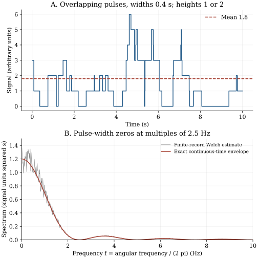

Chapter 18 · Lecture 21
Random pulses, counting cumulants, and shot noise
A detector's spectrum has regularly spaced minima. Do these reveal a preferred interval between events, or the duration of each detector pulse? Independent arrivals can produce spectral zeros without any preferred arrival spacing. The calculation below separates event timing, random pulse height, and deterministic pulse shape. It gives a concrete test: changing the pulse width moves the zeros even when the arrival process is unchanged.
The topic sequence follows lecture 21: Poisson pulses, Campbell cumulants, spectral filtering, charge noise, magnetic pulses, and the bridge to persistent motion. The marked-process derivations, rectangular detector comparison, laboratory, and exercises are teaching extensions. The full English caption track was read; two timed frames were inspected, with limited legibility and partial occlusion. No continuous audiovisual review is claimed.
18.1 Distinguish an event train from its measured signal L21 1:08
Let $\{T_j\}$ be the event times of a homogeneous Poisson process on the entire real time axis. Its intensity $\lambda\gt0$, in inverse seconds, means that the count in an interval of duration $b$ is Poisson with mean $\lambda b$, and counts in disjoint intervals are independent. Event times in their ordered sequence are not independent random variables: their ordered positions constrain one another. Independent counts on disjoint sets, or independent exponential successive gaps after a chosen event, are the useful statements.
Associate with each event an independent real amplitude $A_j$, all with the same distribution and independent of the event times. These amplitudes are called marks. Let the real deterministic function $h(u)$ be a pulse shape, taken dimensionless here; $u$ is elapsed time since the event. A causal detector has $h(u)=0$ for $u\lt0$. The measured signal is
$$ I(t)=\sum_j A_jh(t-T_j).\tag{18.1} $$Its units are those of $A_j$. Overlap between pulses is allowed and does not create arrival correlations. The observation electronics superposes contributions linearly. Saturation, pulse suppression during recovery, or amplitudes depending on recent arrivals would change this model.
For a pulse of finite duration $w\gt0$, only events in a finite interval affect any specified time, so the sum is almost surely finite. For pulses with infinite tails, require $\mathbb E|A|\int_{\mathbb R}|h(u)|\,du\lt\infty$ to obtain absolute convergence at each fixed time. This is a sufficient condition for the uncompensated sum used here. Square integrability alone can instead define a centered compensated random integral; it does not automatically make (18.1) an absolutely convergent ordinary sum.
Using arrivals on the whole line makes the signal stationary: translating every observation time is equivalent to translating the homogeneous event configuration. Every finite collection of measured values has the same joint law after that common translation. Starting arrivals at time zero produces a different, transient preparation. A cumulative count from minus infinity is infinite for positive intensity; only counts in bounded intervals are ordinary finite random variables. The impulse train $J(t)=\sum_j\delta(t-T_j)$ is best interpreted as a random measure, with $\int_a^bJ(t)\,dt$ equal to the interval count. A Dirac delta is a unit-integral distribution, not a finite-height random signal value.
18.2 Mean level: count first, then average L21 18:11
Write $m_r=\mathbb E[A^r]$ for an amplitude raw moment when it exists, and $m_I=\mathbb E[I(t)]$ for the signal mean. To establish the averaging rule, first restrict events to a bounded interval $B$ of length $b$. Conditional on its Poisson count $N_B=n$, the unordered locations can be represented by $n$ independent uniform samples from $B$. Therefore the expected sum of a deterministic integrable function $g$ over these events is $\mathbb E[N_B]b^{-1}\int_Bg(s)\,ds=\lambda\int_Bg(s)\,ds$. Independent marks multiply this by their mean when $g$ is a deterministic pulse contribution.
Apply the bounded-interval identity with $g(s)=h(t-s)$ and average over $A$. Increasing the interval to the whole line is justified for nonnegative contributions by monotone convergence; for signed contributions, apply it to their absolute values first and use the stated finite expectation to pass to the limit. The change of variable $u=t-s$ eliminates $t$, proving (18.2). ∎
This is the homogeneous marked version of Campbell's formula, Last–Penrose, Proposition 2.7, printed page 13. The mean identity itself needs an intensity measure, not Poisson independence. The covariance and higher cumulant identities below use that stronger assumption.
For the running detector, take $h(u)=1$ on $0\leq u\lt w$ and zero elsewhere. Let amplitudes one and two signal units be equally likely. At intensity $\lambda=3\ \mathrm{s}^{-1}$ and width $w=0.4\ \mathrm s$, the mean is $\lambda w m_1=1.8$ signal units. The dimensionless product $\lambda w=1.2$ is the mean number of simultaneously active pulses. A signal mean of 1.8 does not mean an event rate of 1.8 per second: detector width and amplitude intervene.
If arrivals start at zero and the detector is initially empty, the same calculation gives $\mathbb E[I(t)]=\lambda m_1\int_0^th(u)\,du$. For rectangular pulses this rises linearly until time $w$, then equals the stationary mean. For an exponential pulse it approaches the mean asymptotically. Stationary measurements require padding the arrival history or discarding the preparation interval; subtracting a measured mean cannot repair an incorrect transient covariance.
18.3 The same-event term survives centering L21 19:56
Define the centered covariance $C_I(\tau)=\mathbb E[(I(t)-m_I)(I(t+\tau)-m_I)]$, where $\tau$ is a real lag. Assume additionally that $m_2\lt\infty$ and $\int h^2\lt\infty$. For nonnegative rectangular pulses, a direct decomposition already identifies its origin: events affecting both observation times contribute to both signals; events affecting only one cannot create covariance after independent contributions are centered.
Expand $I(t)I(t+\tau)$ as a double sum. Terms with the same event index have expected value $\lambda m_2\int h(t-s)h(t+\tau-s)\,ds$, by the count identity. Terms with two distinct indices have expected value $\lambda^2m_1^2\iint h(t-s)h(t+\tau-r)\,ds\,dr=m_I^2$. To verify the second statement on a bounded interval, condition on $N_B$: there are $N_B(N_B-1)$ ordered distinct pairs, whose expectation is $(\lambda b)^2$ for a Poisson count. Their two uniform locations factorize. Integrability then allows the interval limit. Subtracting $m_I^2$ leaves the same-event term and proves (18.3). ∎
Amplitude variance would be the wrong coefficient. Even fixed identical amplitudes create fluctuations because the number of overlapping arrivals fluctuates. The coefficient is the raw second moment $m_2$, which includes $m_1^2$. The more general random-integral covariance, including its integrability assumptions, is recorded in Last–Penrose, Proposition 15.13, printed page 161.
The rectangle overlaps its translate for duration $(w-|\tau|)_+$, where $x_+=\max(x,0)$. Thus $C_I(\tau)=\lambda m_2(w-|\tau|)_+$ is triangular, despite the absence of arrival-time correlations. In the detector example, $m_2=2.5$, so variance $C_I(0)=3$ and the covariance at lag 0.2 seconds is 1.5. For lags at least 0.4 seconds, the two active-event intervals are disjoint and the signals are independent.
Higher cumulants retain the pulse non-Gaussianity
For bounded pulses of finite duration and bounded amplitudes, the moment-generating function exists near zero. Each event contribution has bounded absolute value, and only a Poisson number of events in a bounded interval can contribute. The Poisson generating function therefore bounds the exponential expectation. Let $u$ have inverse-signal units and define $K_I(u)=\log\mathbb E[e^{uI(t)}]$. On a bounded event interval $B$, conditioning on its count gives a product of independent marked-location contributions. Summing the Poisson series yields
$$K_I(u)=\lambda\int_{\mathbb R}\big(\mathbb E[e^{uAh(s)}]-1\big)\,ds, \qquad \kappa_r(I)=\lambda m_r\int_{\mathbb R}h(s)^r\,ds.\tag{18.4}$$The first equality follows because $\mathbb E[z^{N_B}]=\exp[\lambda b(z-1)]$, with $z$ the mean exponential contribution of one uniform marked event. Differentiating $r$ times at zero proves the cumulant expression. For an unbounded-pulse, infinite-tail, or unbounded-mark model, require an integrable dominating exponential for the displayed generating function and its derivatives; alternatively finite-order cumulants can be derived from characteristic-function derivatives under suitable absolute moment conditions. Existence of a few moments is insufficient for a moment-generating function near zero.
For the rectangular example every $\int h^r$ equals $w$, so $\kappa_3=\lambda w m_3=5.4$ signal units cubed. Its positive third centered moment exposes skewness that a Gaussian approximation discards. Increasing intensity at fixed pulse shape makes standardized higher cumulants shrink: for $r\gt2$, $\kappa_r/\kappa_2^{r/2}$ is proportional to $\lambda^{1-r/2}$ when the moments exist. This is a scaling observation about this family, not a proof that an arbitrary high-rate detector signal is Gaussian.
18.4 Pulse duration can create spectral zeros L21 22:53
Use angular frequency $\omega$, in radians per second, and the two-sided centered convention from chapter 16: $S_I(\omega)=\int_{\mathbb R}C_I(\tau)e^{i\omega\tau}\,d\tau$, with inverse $C_I(\tau)=(2\pi)^{-1}\int S_I(\omega)e^{-i\omega\tau}\,d\omega$ when ordinary inversion applies. Define the pulse transform $H(\omega)=\int h(u)e^{i\omega u}\,du$, in seconds for our dimensionless $h$. This normalization differs from a transform that puts $1/(2\pi)$ in its forward integral; keeping the convention visible prevents a spurious factor in the measured noise level.
Substitute (18.3) in the Fourier integral and set $v=u+\tau$. The exponential factors as $e^{i\omega v}e^{-i\omega u}$, so the double integral is the product $H(\omega)H(-\omega)=|H(\omega)|^2$ for real $h$. Absolute integrability justifies changing integration order. The uncentered correlation is $C_I(\tau)+m_I^2$; the Fourier transform of the constant term is the stated Dirac mass. ∎
The rectangle gives $H(\omega)=w e^{i\omega w/2}\operatorname{sinc}(\omega w/2)$, where $\operatorname{sinc}(x)=\sin x/x$ with value one at zero. This follows by integrating $e^{i\omega u}$ from zero to $w$ and factoring out its midpoint phase. Hence $S_I(\omega)=\lambda m_2w^2\operatorname{sinc}^2(\omega w/2)$. The nonzero-frequency zeros occur at $\omega w=2\pi n$ for nonzero integers $n$. At ordinary frequency $f=\omega/(2\pi)$, the first zero is $f=1/w=2.5$ Hz in our example. The limiting centered level at zero is $\lambda m_2w^2=1.2$ signal units squared seconds; it is distinct from the mean-induced delta mass.
A finite record replaces a spectral distribution by bins with finite widths. Without subtracting the mean, a large near-zero bin reflects the windowed constant component. Calling that one bin a measured Dirac delta confuses an infinite-time definition with its estimator. Subtracting a sample mean also changes the very lowest-frequency estimate. The laboratory subtracts the known theoretical mean so that its centering convention is explicit.
18.5 Charge noise and magnetic pulses L21 27:48
For identical charge packets $e\gt0$ arriving independently at rate $\lambda$, the ideal current measure is $i(t)=e\sum_j\delta(t-T_j)$. Its mean current is $\bar i=e\lambda$; its centered covariance is $e^2\lambda\delta(\tau)$ in the distributional sense. The two-sided angular spectrum is the constant $e^2\lambda=e\bar i$. Under the usual one-sided per-hertz convention, whose integral over $f\geq0$ gives the variance, the level doubles to $2e\bar i$. These statements concern an ideal Poisson source; correlated electron transport, charge statistics, and the electronics can change the observed result. A real detector smooths the impulses, restoring the multiplicative $|H|^2$ response.
An exponentially decaying detector pulse $h(u)=e^{-u/\tau_p}$ for $u\geq0$, with decay time $\tau_p\gt0$, has $H(\omega)=\tau_p/(1-i\omega\tau_p)$. Its centered spectrum is $\lambda m_2\tau_p^2/(1+\omega^2\tau_p^2)$, a Lorentzian. The covariance is $\lambda m_2\tau_p e^{-|\tau|/\tau_p}/2$, obtained either by direct overlap integration or Fourier inversion. A Lorentzian alone therefore does not identify a thermal relaxation mechanism; random event pulses can produce one.
The lecture's magnetic-domain example motivates this exponential response. A changing magnetic flux produces a coil voltage proportional to its time derivative. One must specify whether the idealized jump in flux is included: differentiating $e^{-t/\tau_p}\mathbf1_{t\geq0}$ produces both a delta term at onset and the subsequent exponential decay. If only the resolved decay after an unresolved onset is modeled, the exponential voltage pulse is a useful detector model. It does not establish independent domain events. Collective magnetic avalanches can violate the Poisson hypothesis; the algebra here predicts the statistics of the stated independent-pulse model.
18.6 An integral of colored noise remembers velocity L21 41:47
For comparison, let $V(t)$ take the values $+v_c$ and $-v_c$, switching direction at rate $\nu\gt0$ in either state. Here $v_c$ is a speed, not a pulse amplitude. In its symmetric stationary state, its mean is zero and its covariance is $v_c^2e^{-2\nu|\tau|}$, as derived in chapter 6. Let position obey $X(t)=X(0)+\int_0^tV(s)\,ds$. The pair $(X,V)$ is a Markov state; position alone generally omits the current direction.
This construction differs from adding independent pulses. Adjacent velocity intervals alternate sign, so treating their signs as independent shot-noise marks would change the process. Nevertheless the covariance-to-displacement calculation is immediate: $\mathbb E[(X(t)-X(0))^2]=2\int_0^t(t-s)v_c^2e^{-2\nu s}\,ds$ for the stationary symmetric initial velocity. Its short-time limit is ballistic, proportional to $t^2$; its long-time growth is diffusive. Chapter 19 develops the full state equations and the finite-speed probability fronts. A similar spectral shape need not imply a similar path law.
18.7 Computational laboratory: pad the stationary history
The laboratory constructs the rectangular detector exactly at sample times, by summing marks of arrivals in $(t-w,t]$. It draws a Poisson count over $[-w,T]$, then uniform ordered locations and independent heights one or two. Padding by one pulse width makes the sampled record stationary from its first observation. A prefix sum of sorted marks avoids approximating event times by grid cells. Inputs are the fixed parameters above, time step 0.01 seconds, duration 5,000 seconds, and seed 2026110821. Outputs are the retained numerical data and report; execution overwrites those two files and makes no network calls.
mean=1.800000; variance=3.000000; third cumulant=5.400000 stationary record mean=1.829676; variance=3.083746 integrated Welch variance=3.086729 first spectral zero=2.500000 Hz
The record is correlated, so its half-million samples are not independent moment estimates. A separate ensemble of 300,000 independent one-time counts tests the mean, variance, and third cumulant without that ambiguity. Independent thinning splits active arrivals into two Poisson counts of mean $\lambda w/2$; their weighted sum has exactly the required one-time law. The stationary record separately checks the triangular covariance at five lags. The Welch periodogram averages finite overlapping windows to reduce estimator scatter. For this even-length real-input Welch transform, only the interior positive-frequency bins are divided by two for comparison with (18.5) at $\omega=2\pi f$; DC and Nyquist are undoubled endpoints and retain their returned values. Sampling aliases high-frequency power; the continuous-time envelope is a low-frequency comparison, not an exact sampled-spectrum identity.

This compact calculation implements the exact moment predictions independently of the full simulation:
def rectangle_statistics(rate, width, amplitude_moments):
if rate < 0 or width <= 0:
raise ValueError("rate must be nonnegative; width positive")
return [rate*width*moment for moment in amplitude_moments]
print(rectangle_statistics(3.0, 0.4, [1.5, 2.5, 4.5]))The returned values are the first three cumulants, in their respective powers of signal units. They are not amplitude cumulants. Run python code/ch18_shot_noise.py followed by python figures/ch18_shot_noise.py using the declared dependencies to reproduce the complete comparison.
18.8 What can a spectrum identify?
A known pulse response and independent marks turn a spectrum into a test of arrival intensity and amplitude second moment. If pulse shape is unknown, its envelope and the event statistics are confounded. Mean and centered spectrum cannot distinguish all amplitude distributions, because they contain only $m_1$ and $m_2$; higher cumulants or resolved marks supply additional information. Correlated arrivals add distinct-event covariance terms that disappeared in Proposition 18.2. Random pulse widths require averaging the individual squared transforms, not squaring an averaged transform. Stationarity, linear response, independent marks, and sufficient integrability are model assumptions that must accompany any inferred event mechanism.
18.9 Exercises with worked solutions
Exercise 18.1 — Random counts with deterministic marks (conceptual)
Every pulse has height one, width $w$, and Poisson arrival intensity $\lambda$. A proposed covariance formula uses $\operatorname{Var}(A)$ and predicts no noise. Identify the missing randomness and compute the correct one-time distribution.
Worked solution
The signal at time $t$ is the number of events in $(t-w,t]$. It is Poisson with mean and variance $\lambda w$, although the amplitude variance vanishes. The random number of active pulses produces the noise. Its characteristic function is $\exp[\lambda w(e^{iu}-1)]$, so all one-time cumulants equal $\lambda w$. The covariance uses $\mathbb E[A^2]=1$, giving $\lambda(w-|\tau|)_+$, not zero. The proposed formula incorrectly conditions on a fixed count and fails to restore count fluctuations.
Exercise 18.2 — A spectral minimum is not a quiet arrival process (conceptual)
The rectangular detector's width doubles while the arrival intensity and mark law stay fixed. Predict the mean, variance, low-frequency spectral level, and first zero relative to their old values. Explain why the zero does not demonstrate anticorrelated events.
Worked solution
The mean and variance are each proportional to $w$, so both double. The centered spectral level at zero is proportional to $w^2$, so it quadruples. The first positive zero $1/w$ halves. These conclusions follow from integrating the pulse and its overlap, with no change to the Poisson counts. The zero reflects cancellation of Fourier phases within one rectangular pulse: at $\omega w=2\pi$, its transform is zero. It is not evidence of a forbidden arrival spacing. An independent measurement of pulse width, or a width-change experiment, resolves that ambiguity.
Exercise 18.3 — Derive an exponential detector covariance (derive)
For $h(u)=e^{-u/\tau_p}\mathbf1_{u\geq0}$, derive the mean and covariance directly by integration. Check the variance by integrating its spectrum.
Worked solution
The pulse area is $\tau_p$, giving $m_I=\lambda m_1\tau_p$. For $\tau\geq0$, the overlap integral is $e^{-\tau/\tau_p}\int_0^\infty e^{-2u/\tau_p}\,du=(\tau_p/2)e^{-\tau/\tau_p}$. Covariance is even for a real scalar stationary process, so $C_I(\tau)=\lambda m_2\tau_p e^{-|\tau|/\tau_p}/2$. Integrating $\lambda m_2\tau_p^2/(1+\omega^2\tau_p^2)$ over all angular frequencies and dividing by $2\pi$ gives $\lambda m_2\tau_p/2$, since the integral of $(1+x^2)^{-1}$ on the real line is $\pi$. This agrees with $C_I(0)$ and checks both the width and Fourier normalization.
Exercise 18.4 — Random pulse durations (derive)
Each rectangular pulse now has an independent duration $W\gt0$, independent of its amplitude. Assume $\mathbb E[W^2]\lt\infty$ and the required amplitude moments. Derive the mean, variance, covariance, and low-frequency spectral level.
Worked solution
Condition on the duration mark in the event-sum proof. Pulse area and squared-pulse area are both $W$, giving mean $\lambda m_1\mathbb E[W]$ and variance $\lambda m_2\mathbb E[W]$. The overlap for one marked pulse is $(W-|\tau|)_+$, so $C_I(\tau)=\lambda m_2\mathbb E[(W-|\tau|)_+]$. Integrating over lag gives $S_I(0)=\lambda m_2\mathbb E[W^2]$. More generally $S_I(\omega)=\lambda m_2\mathbb E[W^2\operatorname{sinc}^2(\omega W/2)]$. Replacing $W$ by its mean misses duration dispersion, even though it gives the first two one-time cumulants correctly here. If height and width are dependent, expectations must retain their joint products.
Exercise 18.5 — Design a rate comparison (compute/design)
Two otherwise identical detectors use widths 0.4 and 0.8 seconds with the mark law and intensity of the chapter. Compute the predicted first three cumulants and first spectral zeros. Give a simulation strategy that prevents a spurious preparation effect.
Worked solution
The raw amplitude moments are $1.5$, $2.5$, and $4.5$. Multiplying them by $\lambda w$ gives cumulants $(1.8,3,5.4)$ and $(3.6,6,10.8)$, respectively. Their first zeros are 2.5 and 1.25 Hz. Generate one common Poisson event stream padded from at least minus 0.8 seconds, retain the same marks, and evaluate both moving active-event sums. Shared arrivals reduce the sampling noise of a paired comparison, but they make the two detector outputs correlated; their difference variance cannot be computed by adding variances. Starting at zero without padding understates early pulse overlap, especially for the wider detector. Compare ensembles or time-block uncertainty estimates rather than treating every sampled point as independent.
Exercise 18.6 — Equal spectra, unequal skewness (compute/design)
Replace the amplitudes one and two by a positive gamma-distributed amplitude with the same mean and variance. Does mean plus covariance distinguish the models? Derive the third-cumulant difference for the running rectangle.
Worked solution
The original amplitude mean is $1.5$ and variance is $2.5-1.5^2=0.25$. A gamma amplitude of shape nine and scale $1/6$ has those moments: its mean is shape times scale and its variance is shape times scale squared. Its raw third moment is $9\cdot10\cdot11/6^3=55/12$, whereas the two-point amplitude has raw third moment $4.5=54/12$. Consequently both detector models have mean 1.8 and covariance $7.5(0.4-|\tau|)_+$, but their third cumulants are $1.2(55/12)=5.5$ and 5.4. A sample third moment needs substantially more data and uncertainty control than a mean estimate. Agreement of spectra cannot certify the full amplitude law. The gamma example's noninteger signal values also provide a direct resolved-pulse discriminator, if individual pulses can be measured.
18.10 Sources and attribution
- V. Balakrishnan, IIT Madras, lecture 21, NPTEL 115106089. Timestamp links follow the caption-verified topic changes; the notation and Fourier normalization here are stated independently.
- G. Last and M. Penrose, Lectures on the Poisson Process, author manuscript dated August 21, 2017: Proposition 2.7, p. 13; Theorem 3.9, pp. 23–24; Proposition 15.13, p. 161. These provide precise random-integral conditions and support the independently developed finite-interval derivations above.
The event-sum proofs, detector values, laboratory, original plot, and exercises are additions. The main scientific qualifications concern a stationary event history, raw amplitude moments, finite-intensity counts on bounded intervals, spectral normalization, and the idealized onset of a magnetic pulse. Raw captions and lecture frames are retained privately.